EXECUTION-MARKET
| Field | Value |
|---|---|
| Name | Execution Market |
| Slug | 201 |
| Status | raw |
| Category | Standards Track |
| Editor | Juan Pablo Madrigal-Cianci jp@logos.co |
| Contributors | Filip Dimitrijevic filip@logos.co |
Timeline
- 2026-08-26 —
b655e4b— [RFC] Block Rewards: Replace Burning/Minting with Pooling/Distributing/Releasing (#375) - 2026-08-26 —
5a9bee0— docs(blockchain): make execution steps clearer (#417) - 2026-07-28 —
38916aa— docs(blockchain): prevent execution and storage fees from rounding down to zero (#384) - 2026-07-27 —
ff40ae9— docs(blockchain): TKE: fix base fees in the pseudocode based on G_target (#380) - 2026-07-03 —
709cf7f— Bedrock-RFC: Remove Concept of a Session (#365) - 2026-05-29 —
67e498e— chore: fix math issues (#350) - 2026-05-28 —
d45eed2— Chore: mirror blochain specs into github/mdbook (#347)
Revisions History
| Version | Changes | Date |
|---|---|---|
| 1.0.0 | Initial revision | 2026-04-24 |
| 1.0.1 | Fix base fee constants in pseudocode based on the correct | 2026-07-27 |
| 1.1.0 | Round the base fee update upwards | 2026-07-28 |
| 1.1.1 | Precise that greedy inclusion selects a candidate only if it is valid in the state the already selected transactions leave | 2026-08-24 |
| 1.1.2 | Changing from burning/minting to pooling/distributing | 2026-08-26 |
Disclaimer: This material, including any linked pages or documents, is provided for informational purposes only. It does not constitute investment advice, a solicitation, or an offer to buy or sell any securities, tokens, or other financial instruments, nor should it be construed as legal, financial, or tax advice.
All information regarding project details, token design, distribution mechanisms, technical parameters, and any forward-looking statements is preliminary and subject to change without notice. No representations or warranties are made as to the completeness or accuracy of the information herein.
Nothing in this material should be relied upon for investment or business decisions. Recipients of this information assume all risks associated with its use and are responsible for seeking independent professional advice regarding any actions based on it.
Introduction
Objectives
This specification details the transaction fee mechanism (TFM) for the Logos Blockchain Execution Market, which encompasses the finite resources of on-chain computation. The design is engineered to achieve four primary, interconnected objectives:
- To implement a market that allocates execution resources to transactions that derive the highest economic value from it, ensuring the network's limited capacity is used to maximize total utility.
- To create an environment where the process of bidding for execution is intuitive and the transaction costs are predictable. This is paramount for fostering a healthy developer ecosystem and serving the professional entities that are the intended primary users of the Logos Blockchain network.
- To design a system of rules where the dominant, profit-maximizing strategy for all participants (users and block builders) is to behave honestly and in accordance with the protocol's intended function. This minimizes the potential for manipulative behaviors like transaction censorship or mempool gaming.
- To ensure that network usage contributes directly to the economic value of the native Logos Blockchain token, creating a positive feedback loop between network adoption and the health of its underlying asset.
Design Rationale
The design is founded on a target-based mechanism, philosophically aligned with Ethereum's EIP-1559. This model is crucial for long-term network health and security, as it actively steers execution utilization around a predefined target. This ensures the network remains performant and accessible for nodes with minimal hardware specifications, thereby promoting decentralization.
To further enhance security, this specification addresses a known vulnerability in the classic EIP-1559 design. As demonstrated by recent research (Cachin et al., 2023), EIP-1559 is susceptible to base fee manipulation by rational, non-myopic block builders. Our design incorporates a direct mitigation for this threat, as proposed in Cachin et al., 2023: an Exponential Moving Average (EMA) based update rule for the base fee. Given the EMA nature of this update, these enhancements smooth fluctuations in execution gas consumption, making the protocol significantly more resilient to strategic manipulation without compromising its core benefits of responsiveness and predictability
Furthermore, as opposed to the standard EIP-1559 mechanism, where the base fee is burned and tips are immediately given to miners, in our setting we route fees into a rewards pool, and later we distribute rewards from that pool given to the block builders at a later block through the Anonymous Leaders Reward Protocol, for privacy preservation.
Overview
Our fee mechanism adapts Ethereum's EIP-1559 to the specific economic and security goals of the Logos Blockchain network. It provides predictable execution gas costs for users while creating a robust incentive structure for block builders and Blend nodes that minimizes harmful emergent strategies.
The mechanism operates on four core principles:
- Dynamic Base Fee: A protocol-defined base_fee for Execution Gas must be paid for a transaction to be included in a block. This fee adjusts automatically based on a smoothed average of recent network demand relative to a predefined capacity target, ensuring sustainable network load. This base_fee is the minimal threshold to be paid for the transaction to be accepted by the block builder.
- Priority Fee (Tip): To incentivize faster inclusion by block builders, users add a priority_fee on top of the base fee. This creates a simple and transparent auction for block space during periods of high demand. The proceeds of this goes to the block builder.
- Fee Splitting and Pooling: The two fee components are treated differently. The entire base_fee is routed to the rewards pool, removing it from circulation. As usage grows, more base fees are routed to the pool and removed from circulation, which creates a direct link between network activity and the circulating supply of the native token. The priority_fee is not immediately distributed to the block builder (to preserve privacy), but instead it is directed into the block builders reward stream. 40% of the rewards will be allocated to block builders and the remaining 60% to Blend nodes. Rewards are privacy-preserving via Anonymous Leaders Reward Protocol.
The entire lifecycle can be visualized in the following flow:

Incentive Analysis
- User Strategy: The mechanism promotes a straightforward bidding strategy. A rational user should set their execution_gas_price () to their true maximum willingness to pay. Setting it higher provides no advantage and risks overpayment, while setting it lower risks the transaction being delayed if the base_fee rises. The priority_fee acts as a simple tip to gauge the market rate for priority inclusion during congestion.
- Block Builder Strategy: The dominant strategy for a rational, profit-maximizing block builder is to follow the prescribed block construction algorithm honestly. The block builder's revenue is derived from (a) priority fees and (b) block rewards in accordance with network Key Performance Indicators (KPIs) as described in Block Rewards, which incentivize them to include the transactions that maximize their revenue. Because the base_fee is determined algorithmically based on historical data, a block builder cannot manipulate it for their own immediate gain.
Economic Properties
- Sustainable Resource Management: The TFM automatically steers network usage toward the target (). By increasing the cost of Execution Gas during high demand, the protocol prevents network overload. This protects the ability of nodes with modest hardware to participate, safeguarding decentralization.
- Circulating-Supply Pressure: Routing the base_fee to the rewards pool (and later distributing a proportion of it back as rewards, cf Block Rewards) establishes a direct link between network activity and the circulating supply of the Logos Blockchain token. As usage grows, the rate at which base fees enter the pool increases, applying downward pressure on circulating supply. Because the pool is a redistributable reserve, this pressure acts on tokens in circulation, not on total supply.
Security Properties: Mitigation of Base Fee Manipulation
A critical feature of this design is its resilience to the base fee manipulation attack identified in classic EIP-1559. Our EMA-based update rule directly mitigates this vulnerability in two ways:
- Impact Dampening: The influence of any single block's Execution Gas consumption (e.g., an empty block) on the fee update is dampened by a factor of (), preventing sharp, manipulative drops in the base_fee.
- Exponential Decay: The effect of a manipulative block on subsequent base_fee calculations decays exponentially, making it economically infeasible for an attacker to sustain the attack.
Construction
Notation
| Symbol | Name | Value | Description |
|---|---|---|---|
| Block Number | - | The index of a block in the chain. | |
| Transaction | - | A single transaction submitted by a user. | |
| Execution Gas Consumed | - | The actual amount of Execution Gas consumed by transaction upon execution. | |
| Execution Gas Price | - | The user-specified price per unit of execution gas they will pay. | |
| Base Fee | - | The protocol-defined Execution Gas price for inclusion in block . This is initialized at 1 for the first block. | |
| Priority Fee | - | The portion of the Execution Gas price that serves as a tip to the block builder (). | |
| Total Execution Gas Used | - | The sum of Execution Gas consumed by all transactions in block . | |
| Smoothed Average Execution Gas | - | The Exponential Moving Average (EMA) of Execution Gas used up to block . | |
| Max Execution Gas Per Block | 3,193,460 | A protocol constant defining the hard limit on . | |
| Target Execution Gas Per Block | 1,596,730 | A protocol constant for the ideal Execution Gas usage. The TFM steers usage towards this target. This is set to half of execution gas units. | |
| Fee Adjustment Rate | 1/8 | A protocol constant controlling how quickly the base fee adjusts to demand. | |
| EMA Smoothing Factor | 9/10 | A protocol constant defining the weight of historical average in the EMA update rule. | |
| Total fee | - | ||
| Amount of base fees pooled | - | This is used as an input to compute the block rewards |
Parameter Justification
We set , which results in up to a 12.5% increase or decrease in the fee at every block. This choice of parameter is made following empirical evidence on other protocols where it has worked sufficiently well, such as Ethereum (cf. EIP 1559: A transaction fee market proposal).
We set a value of as it robustly achieves the primary security goal of mitigating base fee manipulation while retaining sufficient market responsiveness. This setting heavily dampens the influence of any single block's gas usage on the new smoothed average to a mere 10%, making manipulation attacks prohibitively expensive for their limited impact. This is economically equivalent to a lookback period of approximately 19 blocks.
Furthermore, we set Execution Gas units (cf as explained in [Overview] Cryptoeconomics), and Execution Gas units. The 50% target creates a perfectly symmetrical buffer, giving the network equal capacity to elastically expand block sizes to absorb demand spikes or contract them during lulls. Any other value would create an asymmetric system, making it either too volatile and over-reactive to demand increases (e.g., a 75% target) or too sluggish to respond to periods of low activity. This rationale is also borrowed from Ethereums EIP-1559 (cf EIP 1559: A transaction fee market proposal) and is also used in (Base Fee Manipulation In Ethereums EIP-1559 Transaction Fee Mechanism).
Block Builder Mechanism: Block Construction
A rational, profit-maximizing block builder must follow this algorithm to construct a valid and optimal block .
Algorithm Steps:
- Fetch State: Retrieve the current base fee for the block to be built, .
- Filter Mempool: From the set of all available transactions , create a candidate set containing only valid transactions where the user's Execution Gas price cap is sufficient to pay the base fee.
- Sort Candidates: Sort the valid transactions in in descending order of revenue
- Greedy Inclusion: Initialize an empty block and a running total for Execution Gas used, current_block_gas = 0. Iterate through the sorted transactions and add them to the block one by one, as long as the block's total Execution Gas does not exceed the limit and the transaction is valid in the state left by the previously selected transactions.
Pseudocode for Block Construction:
def construct_block(mempool, base_fee, gt, G_max):
# Step 2: Filter Mempool
valid_txs = [tx for tx in mempool if tx.execution_gas_price >= base_fee]
# Step 3: Sort Candidates by priority fee (descending)
valid_txs.sort(key=lambda tx: tx.revenue, reverse=True)
# Step 4: Greedy Inclusion
block_txs = []
current_block_gas = 0
for tx in valid_txs:
if current_block_gas + tx.gas_limit <= G_max and applies(tx, block_txs):
block_txs.append(tx)
current_block_gas += tx.gas_limit # Using gas_limit for packing
return block_txs
applies(tx, block_txs) holds when tx is valid in the state left by the previously selected transactions, per Block Proposal Validation.
On-Chain Rules: Fee Update and Revenue
After a block is executed and its total Execution Gas usage is known, the protocol deterministically applies the following rules.
Base Fee Update Rule
The base fee for the next block, , is calculated based on the state of block .
- Total Execution Gas Used: First, sum the actual Execution Gas consumed, , for all transactions in the block : .
- Smoothed Average Update: Update the EMA of Execution Gas usage: .
- Next Base Fee Calculation: Update the base fee for block : .
Pseudocode for Base Fee Update:
Because base fee computation affects consensus state, the implementation must be fully deterministic across all nodes. For that reason, the normative implementation of the reward function should not rely on floating-point arithmetic, machine-dependent rounding behavior, or comparisons against machine epsilon. Earlier sections use real-valued formulas to explain the mechanism and its economic meaning, but the consensus rule itself should be defined only in terms of integer arithmetic.
The goal of this section is not to change the execution mechanism. It is only to restate the already-specified mechanism in a canonical deterministic form with explicit named constants. Therefore we provide here a reference implementation that uses unsigned integers to have a common reference.
First we rewrite
The integer base fee is obtained by rounding this quantity upwards, while the smoothed average is rounded downwards:
And so we propose the following code reference:
EMA_DENOMINATOR = 10 # from q = 9/10
EMA_PREV_WEIGHT = 9 # from q = 9/10
BASE_FEE_NUMERATOR = 11_177_110 # = 7 * G_target
BASE_FEE_DENOMINATOR = 12_773_840 # = 8 * G_target
def ceil_div(numerator: int, denominator: int) -> int:
return (numerator + denominator - 1) // denominator
def update_g_avg(prev_g_avg: int, block_gas_used: int) -> int:
numerator = block_gas_used + EMA_PREV_WEIGHT * prev_g_avg
return numerator // EMA_DENOMINATOR
def update_base_fee(base_fee: int, g_avg: int) -> int:
numerator = base_fee * (BASE_FEE_NUMERATOR + g_avg)
return ceil_div(numerator, BASE_FEE_DENOMINATOR)
The two rounding directions are not interchangeable. The base fee is multiplied by a factor smaller than one whenever the smoothed average is below the target, so rounding it downwards would make 0 an absorbing state: a base fee of 1 would be mapped to 0 by the first downward update, and every subsequent update would keep it at 0, making execution permanently free. Rounding upwards makes 1 the effective floor of the base fee and leaves the mechanism unchanged at every other price level, as the rounding error is at most one unit against an adjustment of up to . The smoothed average is a measurement rather than a price and is not subject to this failure mode, as it is additive and recovers from 0 as soon as demand resumes. Rounding it upwards would instead pin it at 1 once it has been positive, reporting residual demand on an idle network.
Fee Distribution
For every transaction t, the effective priority fee is
The final fee paid by the transaction is:
Let the amount of Execution fee routed to the rewards pool in a block be:
This pooled quantity is then used as an input for the computation of the block rewards. It is the Execution-market component of the per-block pool inflow , as described in Block Rewards.